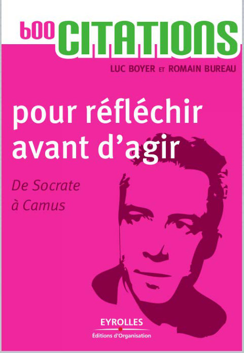
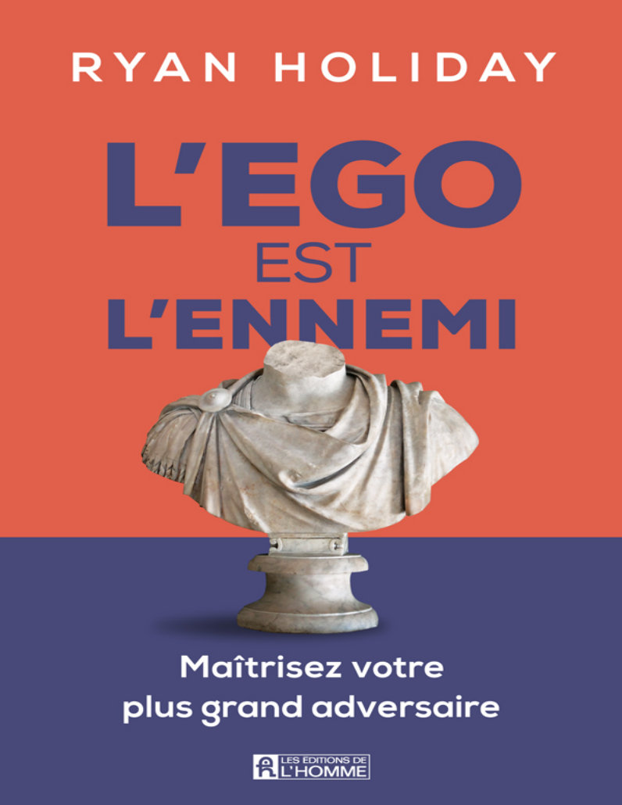
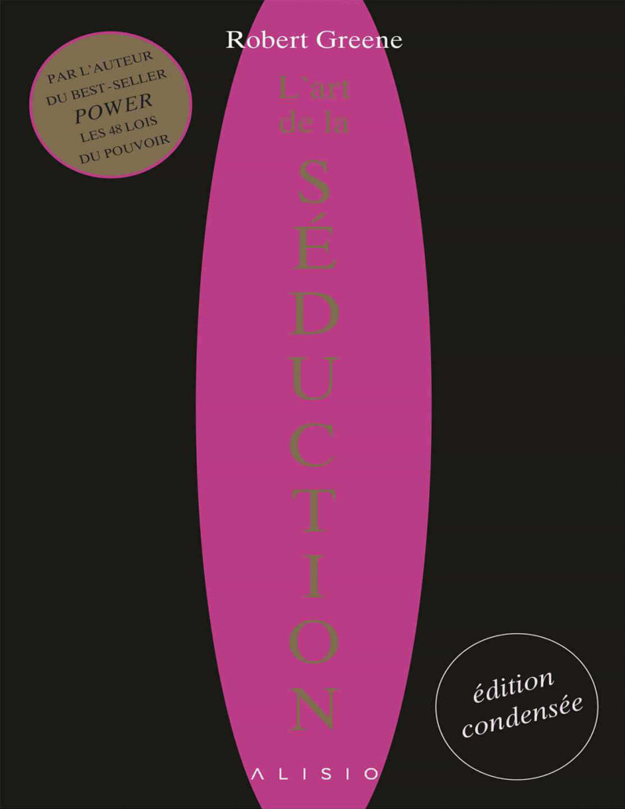
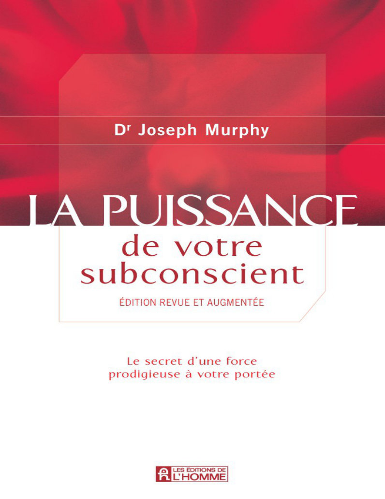
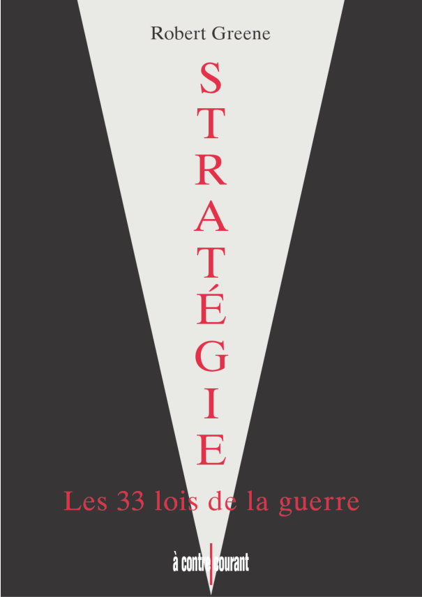

savoirs · 8 synthèses
600 citations pour réfléchir avant d’agir
Luc Boyer et Romain Bureau
Recueil de citations regroupées autour de la réflexion et de l’action.
Notices corrigées, résumés par chapitre, couvertures originales, PDF locaux et sources extérieures identifiées.

Luc Boyer et Romain Bureau
Recueil de citations regroupées autour de la réflexion et de l’action.

Ryan Holiday
Ryan Holiday décrit les effets de l’ego sur trois phases de la vie : l’aspiration, la réussite et l’échec. Il critique l’autopromotion, le sentiment de supériorité et l’incapacité à accepter l’apprentissage ou les revers. Le livre défend l’humilité, la discipline, le travail et le retour aux faits comme conditions d’une progression durable.

Votre Efficacité Personnelle (éditeur indiqué sur le PDF ; auteur individuel non identifié)
Texte sur la pensée positive, la concentration et la façon d’aborder ses objectifs.

Christine Chevalier
Guide consacré aux émotions et à la gestion quotidienne des conflits, du stress et de l’agressivité.

Clément Rizet
Parcours historique de la psychologie, de ses racines antiques aux approches contemporaines.

Robert Greene
Édition condensée sur les mécanismes de séduction et d’influence.

Joseph Murphy
Joseph Murphy expose les liens qu’il suppose entre pensées conscientes, convictions inconscientes et expériences de vie. Chaque chapitre applique cette idée à la santé, au travail, aux relations, à la peur ou à la réussite. Il s’agit d’une œuvre de spiritualité et de développement personnel : les promesses thérapeutiques ou causales ne sont pas démontrées.

Robert Greene
Analyse des comportements humains, des émotions et des rapports interpersonnels.

Lise Bourbeau
Lise Bourbeau propose une lecture symbolique de la personnalité à travers les perceptions, le langage, les émotions, les habitudes et le corps. Le livre invite à s’observer et à s’accepter dans un cadre spirituel propre à l’autrice. Les interprétations psychologiques et médicales développées ne constituent pas des connaissances scientifiques validées.

Robert Greene
Présentation de trente-trois stratégies illustrées par des exemples historiques.